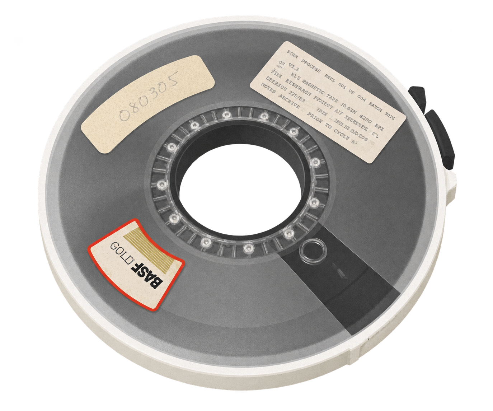
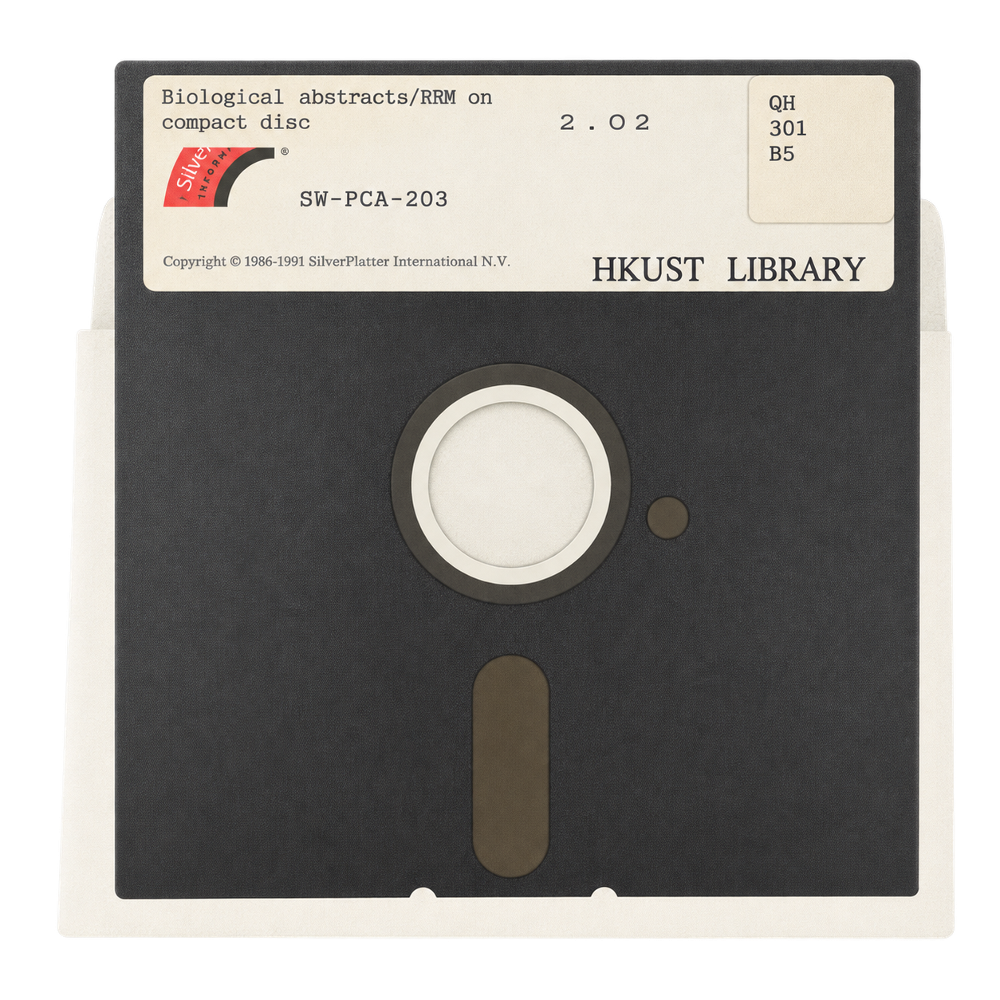
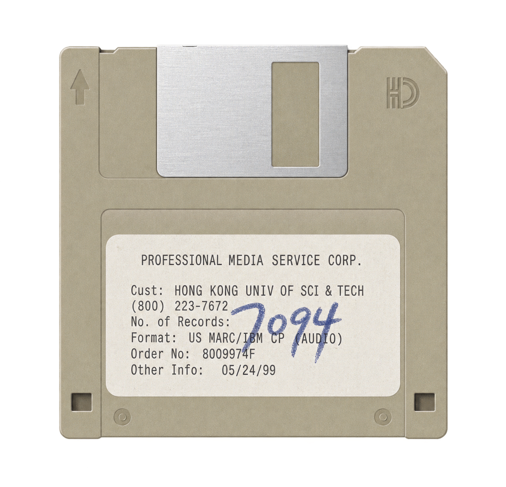
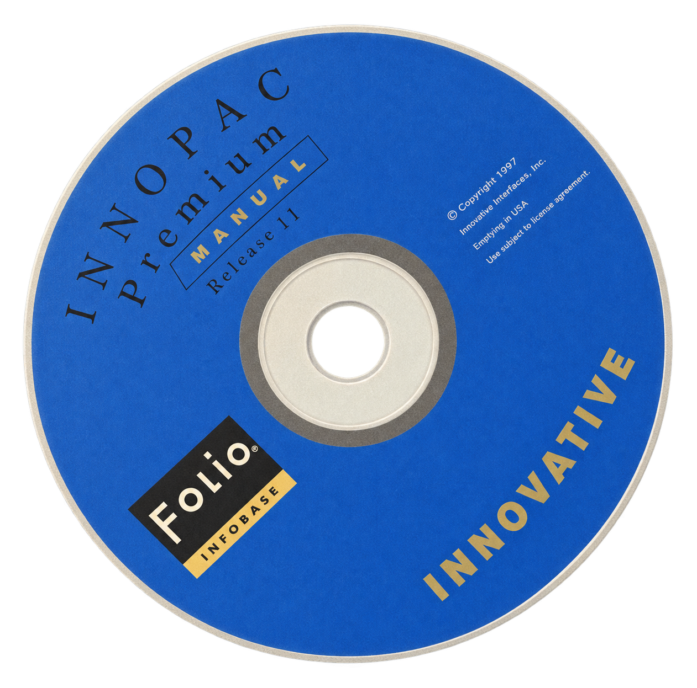
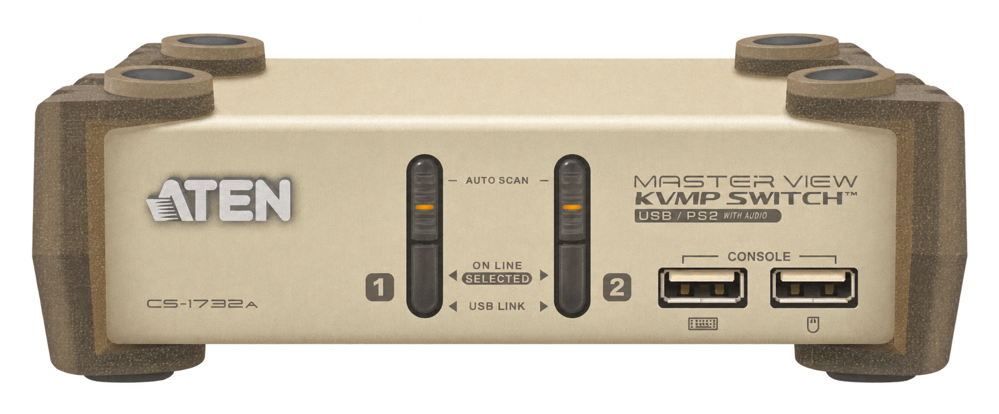
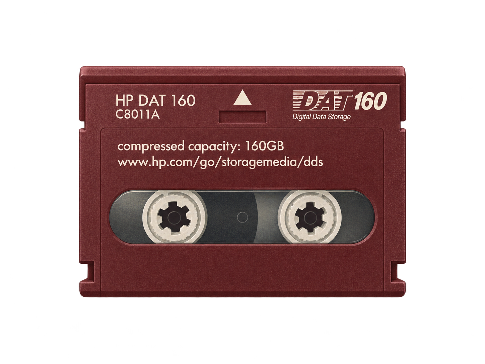
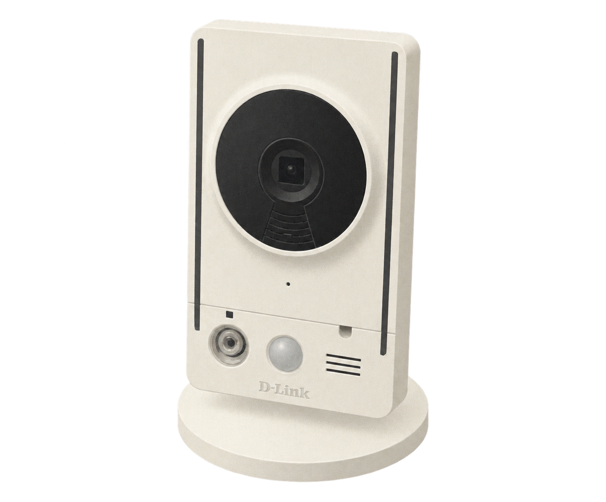
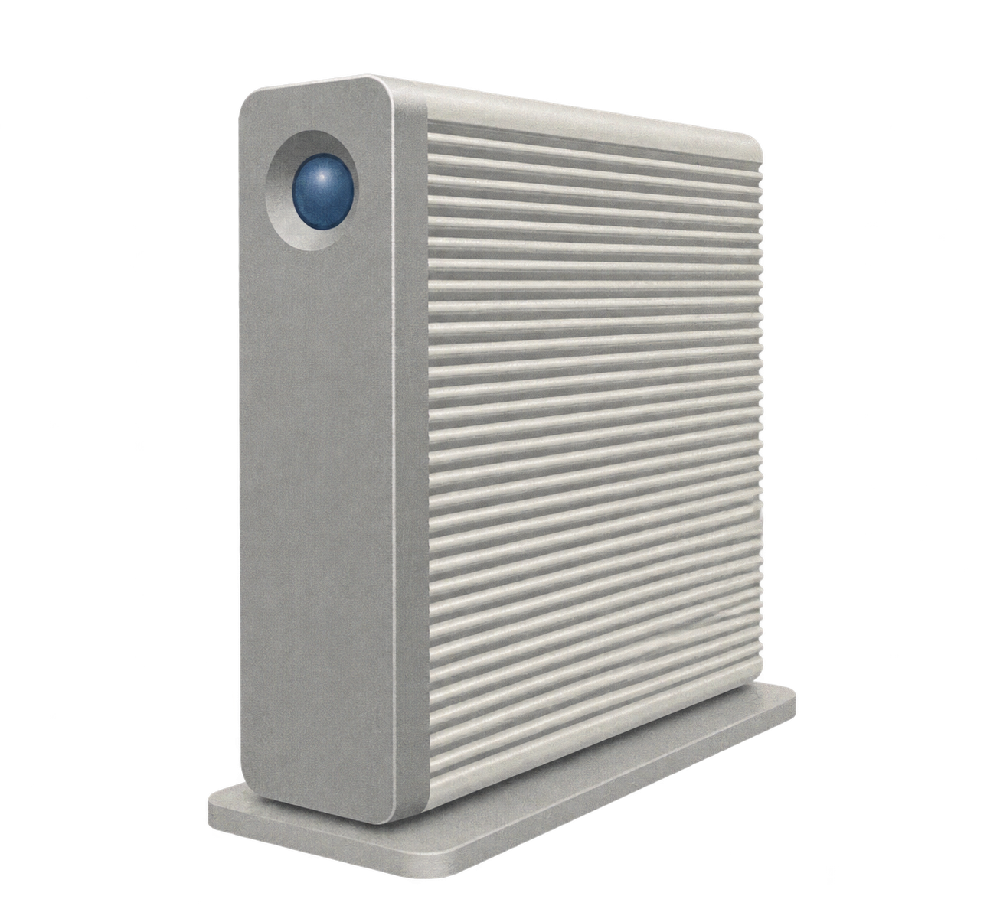

BASF 9-Track 1/2-inch Open Reel Tape (080305)
[1993]
FUNCTION // Mainframe offline batch backup.FIG 01.01
The exhibition is divided into three acts: the age of physical distribution (RECORDS), the era of local infrastructure management (SYSTEMS), and the transition to connected networks (NETWORKS).
ACT I — Physical media carrying the early digital catalog.



ACT II — The hardware and software running the library.



ACT III — Transitioning from local hardware to connected infrastructure.


Chapter 5 discusses the memory hierarchy, contextualizing hard drives and tapes as secondary/tertiary storage.
Covers magnetic and optical recording principles and interface trade-offs.